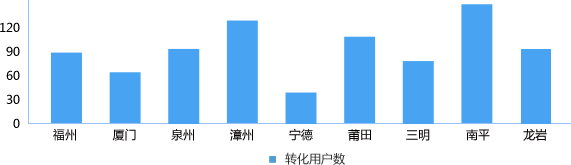
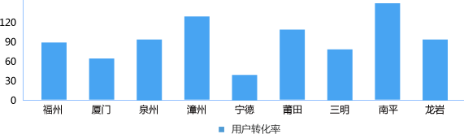

-
营销转化率
排序 区域 转化用户数 转化率 全省 5346589 9% 1 福州 3733523 23% 2 厦门 816237 16% 3 宁德 753422 75% 4 莆田 432786 4% 5 泉州 321934 32% 6 漳州 231765 23% 7 龙岩 96341 65% 8 三明 86452 65% 9 南平 43178 32% 排序 区域 转化用户数 转化率 更多… 全省 5346589 9% 1 福州 3733523 23% 2 厦门 816237 16% 3 宁德 753422 75% 4 莆田 432786 4% 5 泉州 321934 32% 6 漳州 231765 23% 7 龙岩 96341 65% 8 三明 86452 65% 9 南平 43178 32% -

排序 区域 转化用户数 转化率 全省 5346589 9% 1 福州 3733523 23% 2 厦门 816237 16% 3 宁德 753422 75% 4 莆田 432786 4% 5 泉州 321934 32% 6 漳州 231765 23% 7 龙岩 96341 65% 8 三明 86452 65% 9 南平 43178 32% 排序 区域 转化用户数 转化率 更多… 全省 5346589 9% 1 福州 3733523 23% 2 厦门 816237 16% 3 宁德 753422 75% 4 莆田 432786 4% 5 泉州 321934 32% 6 漳州 231765 23% 7 龙岩 96341 65% 8 三明 86452 65% 9 南平 43178 42%